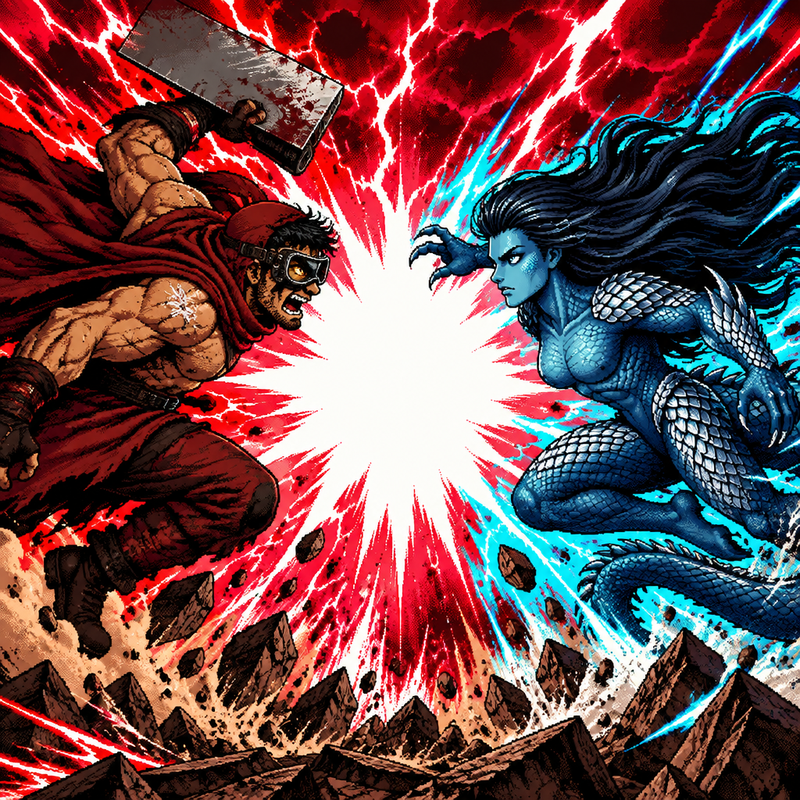

Know the zones. Know the monsters. Know when to run.
The ten-zone journey and New Game+
GuideTen zones and Score gates
GuideCombat, Score, Energie, and Boss Rush
GuideCommon and zone enemies
GuideThe ladder of ten
GuideCodes, collectibles, and things left unexplained
GuideBlutrausch Energie abilities
GuideBuild your rampage
GuideWhat happens when the journey continues?
Tap to attack, earn Score, reach each zone's boss threshold, and carry your purchased Perks into New Game+. Keep your eyes open. Not every discovery comes with a signpost.
Read the complete guide →